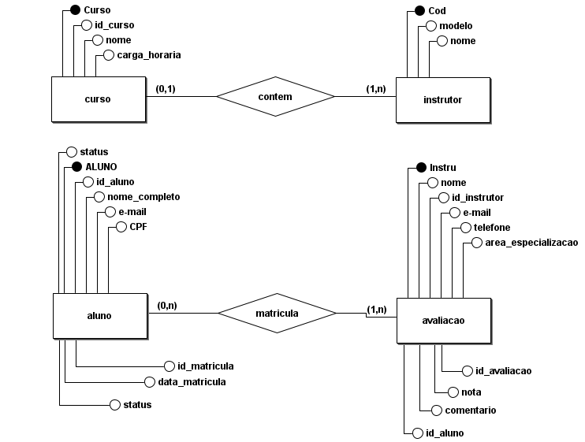
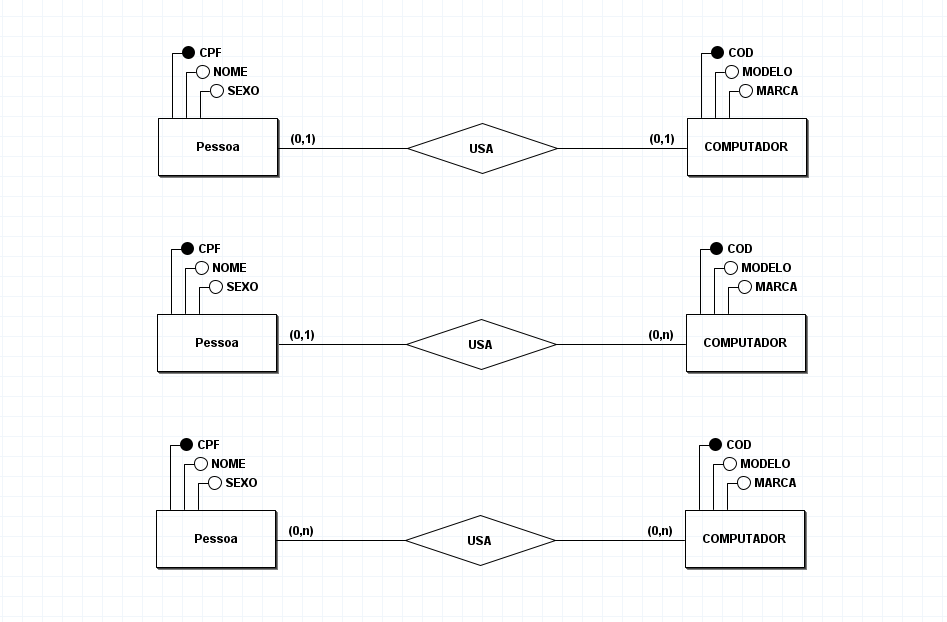

Fundamentos de Banco de Dados
1. O que é um SGBD?
SGBD (Sistema Gerenciador de Banco de Dados) é o software que permite criar, armazenar e gerenciar dados.
Tipos: Relacionais (MySQL, PostgreSQL) e Não Relacionais (MongoDB, Redis).
2. Principais Bancos de Dados
Entre os mais utilizados estão:
- MySQL
- PostgreSQL
- Oracle
- MongoDB
- SQL Server
3. Dicionário de Dados
É a documentação que descreve todos os dados do sistema: tipos, tamanhos, restrições e funções.
Tipos comuns: Inteiro, String, Booleano, Real, Data, Chave Primária.
4. Modelagem de Banco de Dados
É a estruturação dos dados usando diagramas.
DER: Diagrama Entidade‑Relacionamento.
MER: Modelo Entidade‑Relacionamento.
5. Exemplo de diagrama DER
Um DER representa entidades como Cliente, Produto, Pedido e suas relações.
Foto DER:
6. Exemplo de diagrama MER
O MER detalha atributos e cardinalidades entre entidades.
Foto MER:
